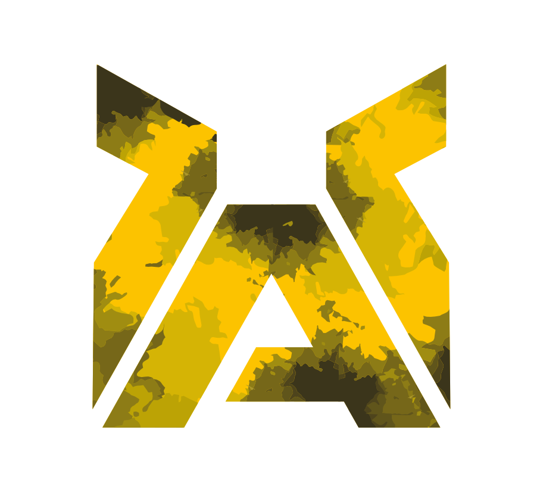

Редакция от 24.02.2026
1.1. Настоящие Правила (далее Правила Клуба) Клуба единоборств «Anthem» в лице ИП Амирсейидов Ш. Ш. (далее Клуб) являются неотъемлемой частью всех Договоров об оказании спортивно-оздоровительных и учебно-спортивных услуг, заключенных между Исполнителем Заказчиком. Получение Посетителем услуг Исполнителя означает безусловное согласие Посетителя с настоящими Правилами Клуба. 1.2. Правила Клуба обязательны для исполнения Заказчиками, Потребителями услуг, потенциальными Потребителями услуг, гостями Клуба и третьими лицами (далее Посетители). Правила Клуба не являются исчерпывающими, так как Исполнитель вправе самостоятельно их дополнять и/или изменять. 1.3. Настоящие Правила Клуба разработаны в соответствии с Гражданским Кодексом Российской Федерации, Законом Российской Федерации «О защите прав потребителей», Государственным стандартом Российской Федерации ГОСТ Р 52025-2003 «Услуги физкультурно-оздоровительные и спортивные. Требования безопасности потребителей» и иными действующими законодательными актами Российской Федерации. 1.4. Правила Клуба устанавливаются Исполнителем самостоятельно, являются публичной офертой, находятся в открытом доступе в Клубе, на Сайте, доводятся до сведения Посетителей при заключении Договора и должны быть приняты физическим лицом, индивидуальным предпринимателем или юридическим лицом не иначе как путем присоединения к ним в целом. 1.5. Соблюдение настоящих Правил Клуба является обязательным условием для возможности получения услуг Исполнителя. Несоблюдение Правил Клуба Посетителем создает невозможность оказания услуг и может привести к приостановке их оказания. Работник Клуба вправе потребовать от Посетителя воздержаться от нарушения Правил Клуба и/или потребовать устранения допущенного нарушения Правил Клуба в устной форме, лично или по телефону. В случае нарушения Посетителем Правил Клуба, Исполнитель оставляет за собой право отказаться от исполнения заключенного с таким Посетителем Договора.
Для целей настоящих Правил Клуба используются следующие понятия, термины и определения: 2.1. «Клуб» - объект недвижимого имущества, который включает в себя здание(сооружение), оборудованное помещение, оснащенное специальными техническими средствами и предназначенные для организации и проведения спортивно-оздоровительных и учебно-спортивных мероприятий. 2.2. «Исполнитель» - индивидуальный предприниматель и/или юридическое лицо, оказывающее услуги Посетителям в рамках соответствующего Договора на оказание спортивно-оздоровительных и учебно-спортивных услуг. В случае, если на территории Клуба на условиях договоров субаренды находятся иные физические и/или юридические лица, оказывающие услуги Посетителям, такие лица самостоятельно определяют порядок оказания ими услуг и несут ответственность перед Посетителями за качество оказываемых ими услуг. Исполнитель не несет ответственности за деятельность вышеуказанных иных физических и/или юридических лиц. 2.3. «Посетитель» - Заказчик, Потребитель услуг, потенциальный Потребитель услуг, Несовершеннолетний посетитель и иные физические лица получающие и/или имеющие намерение получать спортивно-оздоровительные и учебно-спортивные услуги при посещении мероприятий на территории Клуба. 2.4. «Несовершеннолетний посетитель» - физическое лицо младше 14 (Четырнадцати) лет, обладающее правами на предоставление ему услуг в соответствии с условиями Договора, в результате акцепта, совершенного законным представителем такого лица и/или иным акцептантом, которые несут ответственность за исполнение Несовершеннолетним посетителем Правил Клуба. Лица в возрасте от 14 до 18 лет, имеющие паспорт гражданина РФ, для целей настоящих Правил Клуба по правам и обязанностям приравниваются к Посетителям, т.е. самостоятельно несут ответственность за соблюдение Правил Клуба. 2.5. «Представитель несовершеннолетнего посетителя» - физическое лицо старше 18 (Восемнадцати) лет, являющееся законным представителем/сопровождающим лицом Несовершеннолетнего посетителя, которое несет ответственность за неисполнение Несовершеннолетним посетителем Правил Клуба. 2.6. «Договор на оказание спортивно-оздоровительных и учебно-спортивных услуг» - соглашение между Заказчиком и Исполнителем, заключенное по форме, установленной Исполнителем, в порядке и на условиях, установленных Исполнителем и настоящими Правилами Клуба, определяющее взаимоотношения Сторон при оказании услуг. 2.7. «Основные услуги» - услуги в области спорта, физической культуры и отдыха, предоставляемые Посетителю в виде возможности посещения указанных в Договоре тренировочных занятий, консультаций, тренингов, возможности пользования помещениями Клуба (раздевалкой, душевой, тренировочными залами, в том числе с правом пользования имеющимся спортивным оборудованием (инвентарем, снарядами, снаряжением, экипировкой) в соответствии с назначением Помещений, оборудования и с соблюдением особенностей использования таких Помещений и оборудования. 2.8. «Дополнительные услуги» - все иные услуги, не входящие в состав Основных услуг, оказываемые Посетителю Исполнителем и оплачиваемые по цене, указанной в Прайс-листе или иной оферте Исполнителя. 2.9. «Прайс-лист» - перечень товаров и услуг с указанием цен, предлагаемых Исполнителем, доводимый до сведения Посетителей, в том числе путем размещения на информационных стендах в Клубе. 2.10. «Сайт» - информационный веб-ресурс, размещенный в сети Интернет по сетевому адресу: anthem-gym.ru
3.1. Часы работы Клуба в будние дни – с 08:00 до 22:30, в выходные 9:00 до 22:00 ,праздничные дни – на основании отдельной договоренности с Исполнителем. Часы работы Клуба, а также часы посещения отдельных тренировок, консультаций, тренингов размещаются в Клубе на информационных стендах и/или иных носителях, и/или веб-сайте: anthem-gym.ru, и/или иным способом доводятся до сведения Заказчика и/или Потребителя услуг. Исполнитель вправе самостоятельно устанавливать режим работы Клуба и оставляет за собой право на его изменение в одностороннем порядке. 3.2. Исполнитель вправе закрыть Клуб целиком или определенные зоны Клуба для проведения профилактических, ремонтно-восстановительных или аварийных работ и мероприятий. 3.3. Все уборочные-технические мероприятия исполнителем проводится с вечера после окончания рабочего дня Исполнитель вправе ограничить доступ к оборудованию, вышедшему из строя и требующему замены или проведения ремонтно-восстановительных работ. 3.4. Исполнитель оказывает услуги Посетителю в соответствии с условиями Договора с Посетителем только в том объеме и в те часы, которые предусмотрены Договором и установленным Исполнителем расписанием. Посетитель обязан самостоятельно контролировать и соблюдать объем и часы посещения Клуба, предусмотренные его Договором, и не допускать их нарушения.
4.1. Перед заключением Договора Посетитель вправе ознакомиться с Клубом. Ознакомительную экскурсию по Клубу проводит администратор/тренер Клуба на основании предварительной договоренности. 4.2 Посетитель при оплате услуг автоматически подписывает договор между Клубом. 4.3. Срок действия Договора на оказание спортивно-оздоровительных и учебно-спортивных услуг, объем услуг, сертификатов, стоимость и порядок оплаты услуг, а также иные условия оказания услуг указываются в Договоре. Услуги оказываются по адресу фактического нахождения Клуба. 4.4. Оплата услуг Исполнителя осуществляется Посетителем в размере, порядке и в сроки установленные в Договоре. Нарушение Посетителем порядка и/или сроков оплаты услуг Исполнителя, является основанием для одностороннего отказа Исполнителя от исполнения Договора во внесудебном порядке. 4.5. Исполнитель не несет ответственности за недостижение Посетителем желаемого результата (определенной физической формы, спортивного результата и т.п.). Тренировки являются физкультурными. 4.6. Посетитель обязан оплатить любые потребленные им Дополнительные услуги, которые не входят в стоимость Договора с Посетителем, по цене, указанной в Прайс-листе. 4.7. На период посещения Клуба Посетитель получает право временного пользования одним свободным шкафчиком в раздевалке Клуба, предназначенным для хранения личных вещей. Шкафчик в раздевалке Клуба не предназначен для хранения ценных вещей, денег и валютных ценностей. После помещения личных вещей на хранение в шкафчик Посетитель обязан закрыть его на замок и убедиться, что шкафчик закрыт. Исполнитель не несет ответственности за личные вещи Посетителя. 4.8. В случае обнаружения Исполнителем вещей, забытых Посетителем в раздевалке и/или в шкафчиках, Исполнитель вправе изъять их и оставить в Клубе на хранение. В случае обнаружения Исполнителем в конце дня закрытого шкафчика при условии, что данный шкафчик не оформлен в аренду, такой шкафчик в конце дня вскрывается Администрацией Клуба и обнаруженные в нем вещи изымаются на хранение. Исполнитель оставляет за собой право потребовать от Посетителя оплаты стоимости хранения в Клубе забытых вещей. В случае, если Посетитель не обратиться в Клуб с просьбой о возврате забытых Посетителем и изъятых Клубом вещей, такие вещи могут быть утилизированы по усмотрению Исполнителя, по истечении 1 (одного) календарного месяца с даты начала их хранения Клубом. 4.9. Посетитель вправе получить во временное пользование (аренду) дополнительный шкафчик, на оговоренный с Исполнителем период, предварительно оплатив соответствующую Дополнительную услугу. Посетитель обязан оплатить аренду дополнительного шкафчика, по цене, указанной в Прайс-листе Исполнителя. Минимальный период аренды дополнительного шкафчика составляет 1 (один) календарный месяц. 4.10. По истечении срока аренды дополнительного шкафчика Посетитель обязан забрать все свои вещи из шкафчика в последний день аренды. Исполнитель оставляет за собой право трактовать оставление Посетителем вещей в закрытом шкафчике по окончании оплаченного периода аренды как факт волеизъявления Посетителя на продолжение аренды шкафчика на новый период. В случае обнаружения в открытом шкафчике, ранее арендованном Посетителем, вещей последнего Исполнитель принимает их на хранение и оставляет за собой право требовать от Посетителя оплаты стоимости такого хранения в Клубе оставленных вещей по ценам, установленным в Прайс-листе. Замок и/или ключ от шкафчика являются собственностью Исполнителя. В случае утери или повреждения замка/ключа от шкафчика Посетитель обязан компенсировать его стоимость в размере, указанном в Прайс-листе. 4.11. В соответствии со ст. 6 Федерального закона «О персональных данных» Исполнитель в период с момента заключения Договора с Посетителем и до момента достижения цели обработки персональных данных обрабатывают данные Посетителя с использованием своих программно-аппаратных средств. Под обработкой данных понимаются действия (операции) с персональными данными, включая сбор, систематизацию, накопление, хранение, уточнение (обновление, изменение), использование, распространение (в том числе передача), обезличивание, блокирование и уничтожение персональных данных. Посетитель разрешает использовать его фотоизображение и/или видеоизображение путем включения в изображения и/или аудиовизуальные произведения, создаваемые Исполнителем, а также партнерами Исполнителя, которые могут быть обнародованы и/или использованы на Сайте, в группах, сообществах и т.п. социальных сетей в Интернет, Исполнителем и/или партнерами Исполнителя. 4.12. Посетитель несет полную ответственность за достоверность указанного им при заключении Договора с Исполнителем адреса электронной почты, а также номера мобильного телефона, подтверждает, что по указанному номеру отсутствует блокировка на входящие СМС-сообщения с буквенных адресатов, а также несет самостоятельную ответственность за ущерб, причиненный третьим лицам в результате сообщения Посетителем недостоверных сведений. В случае изменения номера мобильного телефона и/или адреса электронной почты, Посетитель обязуется незамедлительно устно и не позднее 3 (трех) календарных дней с момента такого изменения письменно, путем составления заявления в Клуб, сообщить Исполнителю новый номер мобильного телефона и/или адрес электронной почты. В случае возникновения у Исполнителя сомнений в достоверности и точности ранее полученных от Посетителя данных, Посетитель обязан в течение 7 (семи) рабочих дней с момента получения уведомления от Исполнителя предоставить доказательства (информацию, документы), подтверждающую действительность таких данных. 4.13. Посетитель дает согласие на получение сообщений уведомительного и рекламного характера, не касающихся хода исполнения Договора с Исполнителем, оказания Основных услуг и Дополнительных услуг, на номер мобильного телефона и адрес электронной почты, указанные при заключении Договора, а также по адресам контактов, размещенных им в сети Интернет (в том числе, но не ограничиваясь, персональными страницами в социальных сетях). Посетитель вправе отозвать данное согласие и отказаться от получения сообщений путем написания соответствующего заявления в Клуб.
5.1. Фактом заключения Договора с Исполнителем Посетитель подтверждает, что он и/или Несовершеннолетний посетитель, представителем которого он является, не имеет медицинских противопоказаний для получения предусмотренных Договором услуг в Клубе, потребления иных услуг Исполнителя. Посетитель полностью принимает на себя ответственность за состояние своего здоровья и состояние здоровья Несовершеннолетнего посетителя, представителем которого он является. 5.2. Посетитель обязан самостоятельно контролировать состояние своего здоровья и здоровья Несовершеннолетнего посетителя и сообщать Исполнителю о любых изменениях в состоянии своего здоровья и/или здоровья Несовершеннолетнего посетителя, которые могут повлиять на безопасность потребления услуг Исполнителя. Посетитель и/или Несовершеннолетний посетитель обязаны регулярно проходить медицинские обследования в целях проверки состояния своего здоровья и констатации возможности безопасного для здоровья получения предусмотренных Договором услуг в Клубе Исполнителя. 5.3. Исполнитель вправе запросить у Посетителя справку об отсутствии медицинских противопоказаний для получения предусмотренных Договором услуг и потребления иных услуг Исполнителя, подтверждающую безопасность потребления услуг Исполнителя Посетителем и/или Несовершеннолетним посетителем. 5.4. Сотрудник Исполнителя вправе не допускать Посетителя до получения спортивно-оздоровительных и учебно-спортивных услуг при наличии оснований полагать, что у Посетителя имеются признаки заболевания, а также, если его состояние (в том числе психическое) может угрожать жизни и здоровью других Посетителей. 5.5. Посетителю рекомендуется выбирать нагрузку в соответствии с его уровнем подготовленности и наращивать интенсивность занятий постепенно. Ответственность за выбор того или иного вида занятий Посетитель несёт самостоятельно. 5.6. Посетителю не рекомендовано приступать к занятиям без разминки, разогрева мышц и связок в связи с угрозой возникновения негативных последствий для его жизни и здоровья. 5.7. Сотрудник Исполнителя вправе отказать Посетителю в допуске к занятию в случае опоздания к его началу, по причине пропуска Посетителем разминочной части и инструктажа по технике безопасности.
6.1. При входе в Клуб Посетителю необходимо надевать бахилы или переодевать уличную обувь. Посещать спортивно-оздоровительные, учебно-спортивные мероприятия и иные мероприятия необходимо в специальной, чистой обуви и одежде для занятий физической культурой, прикрывающей верхнюю и нижнюю части тела и соответствующей стандартам безопасности и направленности мероприятий; 6.2. Снимать украшения на время участия в спортивно-оздоровительных, учебно-спортивных и иных мероприятиях. Длинные волосы должны быть убраны и завязаны любыми мягкими лентами. Использование заколок запрещено; 6.3. Быть внимательными и аккуратно передвигаться в раздевалках, душевых и/иных помещениях Клуба, обязательно используя специальную сменную, чистую, устойчивую и нескользящую обувь; 6.4. Приходить заблаговременно на спортивно-оздоровительные и учебно-спортивные мероприятия, проводимые в форме индивидуальных или групповых занятий с работником Клуба, Работник Клуба вправе не допустить опоздавшего Посетителя до участия в мероприятии; 6.5. Во избежание травм и нанесения вреда здоровью посещать спортивно-оздоровительные и учебно-спортивные мероприятия, которые соответствуют индивидуальному уровню подготовленности Посетителей. Работник Клуба вправе не допустить Посетителя до участия в мероприятии в случае отсутствия у Посетителя соответствующего уровня подготовленности; 6.6. Соблюдать правила личной и общей гигиены, поддерживать чистоту на территории Клуба; 6.7. Перед началом занятий убедитесь, что используемое оборудование, инвентарь и т.д. находятся в исходном безопасном состоянии, отсутствуют посторонние предметы, которые могут повлиять на безопасное использование; 6.8. По окончании самостоятельных занятий или участия в спортивно-оздоровительных, учебно-спортивных и иных мероприятиях необходимо вернуть используемый инвентарь, оборудование Клуба на специально отведённое место в Клубе, зафиксировать и/или привести его в безопасное нерабочее положение; 6.9. Не оставлять личные вещи без присмотра; 6.10. Покидая Клуб, Посетитель должен освободить соответствующий шкафчик, от своих личных вещей и оставить ключ в личинке замка шкафчика. 6.11. Уважительно и бережно относиться друг к другу, работникам Клуба, третьим лицам, имуществу Посетителей, Исполнителя и третьих лиц. 6.12. В случае возникновения недомогания, Посетителю необходимо информировать об этом работника Клуба для обеспечения оказания первой помощи нуждающемуся. Если самочувствие Посетителя ухудшилось в тот момент, когда в прямом доступе нет работника Клуба, рекомендуем обратиться к любому находящемуся рядом лицу с просьбой оказать помощь и/или пригласить работника Клуба. Для ускорения процесса оказания медицинской помощи рекомендуем самостоятельно вызвать специализированную организацию для оказания медицинской помощи, потом сообщить работникам Клуба о факте ее вызова и указать местонахождение Посетителя, которому необходимо организовать оказание первой и/или медицинской помощи. 6.13. Выполнять указания работников Клуба, запреты и/или ограничения, размещенные на информационных и/или предупредительных, запретительных табличках в Клубе и/или на оборудовании; 6.14. Необходимо выполнять правила поведения и построения. Соблюдать определенный тренером интервал и дистанцию между занимающимися, что бы случайно не задеть соседа во время занятия, выполняя упражнения, махи, удары руками или ногами. Сосед так же должен соблюдать дистанцию, случайные столкновения могут привести к травме. 6.15. Если Посетитель чувствует, что какое-то упражнение ему не под силу, что оно для него физически тяжелое, он обязан предупредить об этом тренера и попросить снизить для него нагрузку. 6.16. При отработке приемов в парах, каждый Посетитель должен быть осторожным и внимательным, что бы случайно не причинить боль своему партнеру. Особенно контроль своих действий актуален при изучении опасных для здоровья техники и приемов, способных привести к вывихам суставов, растяжений сухожилий, связок трещинам и переломом костей, удушениям и т.д. 6.17. При отработке бросковой техники и подводящих упражнений каждому Посетителю надо хорошо знать и правильно выполнять страховку при падениях. Выполняя данную технику, всегда необходимо думать о безопасности своего партнера и его страховке, обеспечивая ему максимальную безопасность при падении. Прежде чем выполнить бросок, необходимо сначала убедится, что партнер упадет на безопасное место. Если Посетитель в чем-то не совсем уверен – необходимо дополнительно проконсультироваться у тренера. 6.18. При объяснении тренером упражнений, Посетители обязаны внимательно слушать, запрещено отвлекаться, мешать остальным ученикам, а так же прерывать и комментировать объяснения тренера. 6.19. Запрещено проходить между Посетителями, стоящими в паре и готовящимися к выполнению приемов. 6.20. При возникновении малейшей боли при проведении болевого приема, необходимо дать знать об этом своему партнеру, хлопая свободной рукой или ногой по партнеру или полу. В этом случае партнер обязан немедленно ослабить давление на ту часть тела, в котором возникла боль. 6.21. Во время проведения приемов каждый обязан полностью контролировать себя, свои эмоции и технику. При нанесении партнером сильных ударов или выполнения им болевых приемов, при которых он не контролирует себя, необходимо его об этом предупредить. Если он делает это сознательно или умышленно – немедленно сообщить об этом тренеру. При умышленном причинении вреда своему партнеру, виновный отстраняется от тренировок.
7.1. Пользоваться Услугами, Дополнительными услугами при плохом самочувствии, в острый период заболевания (в том числе являющихся носителями передающихся инфекционных заболеваний) и/или в период обострения хронического заболевания; 7.2. В период беременности посещать спортивно-оздоровительные, учебно-спортивные мероприятия; 7.3. Проводить на территории Клуба спортивно-оздоровительные, учебно-спортивные и иные и иные мероприятия, в том числе включая, но не ограничиваясь: составлять тренировочные программы, оказывать помощь Посетителям Клуба во время тренировочного процесса и/или контролировать тренировочный процесс Посетителей Клуба, а также оказывать иные услуги Посетителям Клуба или пользоваться такими услугами. Посетители Клуба могут пользоваться только услугами Исполнителя и работников Клуба; 7.4. Оставлять без присмотра детей в возрасте до 14-ти лет на территории Клуба, в том числе в раздевалках, душевых и иных помещениях Клуба; 7.5. Детям и подросткам, не достигшим возраста 16-ти лет, посещать тренировочные зоны и занятия для взрослых; 7.6. Находиться и/или заниматься в зонах Клуба, предназначенных для проведения спортивно-оздоровительных, учебно-спортивных и иных мероприятий, с голым торсом в купальном костюме, в верхней одежде, уличной или грязной обуви, в шлёпанцах, а также без специальной защиты, если таковая предусмотрена для применения во время участия в спортивно-оздоровительных, учебно-спортивных и иных мероприятиях; 7.7. Бросать и иным образом неаккуратно использовать оборудование (гантели, гири, штанги, блины и прочее), так как это ведёт к повреждению оборудования, мебели, помещений Клуба, повышенному шуму, а также к риску причинения вреда здоровью; 7.8. Использовать во время участия в спортивно-оздоровительных, учебно-спортивных и иных мероприятий свое оборудование, не предусмотренное программой мероприятий; 7.9. Продолжать участие в спортивно-оздоровительных, учебно-спортивных и иных мероприятиях с использованием неисправного, поврежденного или сломанного оборудования, инвентаря; 7.10. Оставлять собственный инвентарь на хранение в Клубе без предварительной договоренности и согласия Исполнителя; 7.11. Самостоятельно менять температурный режим, уровень освещения, направленность телевизионных панелей и громкость звукового сопровождения; 7.12. Самостоятельно пользоваться музыкальной и другой аппаратурой Клуба, в том числе включать и/или демонстрировать аудио, видео и иные произведения с использованием/применением любых носителей и/или оборудования в помещениях Клуба. Исполнитель оставляет за собой исключительное право на выбор произведений, транслируемых в Клубе, а также порядок их трансляции; 7.13. Передвигать тренажеры, выносить штанги, гири и гантели из зоны свободных весов, выносить из зон/залов Клуба оборудование, предназначенное для спортивно-оздоровительных, учебно-спортивных и иных мероприятий, а также предметы мебели; 7.14. Резервировать оборудование и инвентарь, предназначенный для спортивно-оздоровительных, учебно-спортивных и иных мероприятий; 7.15. Самостоятельно заниматься в зонах/залах Клуба, предназначенных для организации спортивно-оздоровительных, учебно-спортивных и иных мероприятий, во время технического перерыва, используемого работниками Клуба для уборки или установки, демонтажа оборудования, инвентаря; 7.16. Принимать пищу в местах, предназначенных для спортивно-оздоровительных, учебно-спортивных и иных мероприятий, в зонах отдыха и раздевалках Клуба; 7.17. Использовать стеклянную или иную бьющуюся посуду для напитков или приема пищи во всех зонах Клуба. Необходимо пользоваться только пластиковыми стаканами и/или иными не бьющимися емкостями; 7.18. Ставить стаканы и другие емкости с напитками на тренажёры, музыкальную аппаратуру, оборудование или на не предназначенные для этого предметы мебели; 7.19. Использовать жевательную резинку во время участия в спортивно-оздоровительных, учебно-спортивных и иных мероприятиях; 7.20. Курить, и/или использовать какие-либо курительные приборы, устройства, приспособления, средства, имитирующие процесс курения (электронные сигареты, кальяны, вапорайзеры и т.п.), и/или находиться на территории Клуба в состоянии алкогольного, наркотического, токсического опьянения; 7.21. Принимать сильнодействующие и запрещённые препараты без письменного разрешения врача, приносить и хранить на территории Клуба опасные вещества и предметы: взрывчатые вещества, средства взрывания и предметы, ими начиненные, сжатые и сжиженные газы, легковоспламеняющиеся жидкости, воспламеняющиеся твердые вещества, окисляющие вещества и органические перекиси, токсичные вещества, радиоактивные материалы, едкие и коррозирующие вещества, ядовитые и отравляющие вещества, оружие; 7.22. Использовать ненормативную лексику, как при общении, так и в разговорах по телефону на территории Клуба, громко, неуважительно и/или агрессивно разговаривать, делать все, что может помешать окружающим; 7.23. Пользоваться мобильным телефоном во время участия в спортивно-оздоровительных, учебно-спортивных и иных мероприятиях в Клубе; 7.24. Использовать парфюмерию, мази и другую косметическую продукцию с резким запахом, а также средства, портящие или загрязняющие оборудование, помещения и интерьер Клуба; 7.25. Находиться в технических помещениях и/или помещениях Клуба, предназначенных для работников Клуба; 7.26. Самостоятельно размещать на территории Клуба надписи, объявления, рекламные материалы, проводить опросы или осуществлять рекламную, маркетинговую, консультационную и иную деятельность, в том числе предпринимательскую без письменного согласования с Исполнителем; 7.27. Собирать и/или распространять любыми способами персональные данные, информацию о личной жизни Посетителей Клуба, работников Клуба; 7.28. Проводить кино-, видео- и фотосъёмку в Клубе без письменного разрешения Исполнителя; 7.29. Приносить и пользоваться в Клубе электробытовыми приборами; 7.30. Пользоваться Основными услугами, Дополнительными услугами, Посетителям Клуба с открытыми ранами, травмами, грибковыми и другими кожными заболеваниями; 7.31. Находиться на территории Клуба, за исключением раздевалок и душевых с обнаженными частями тела; 7.32. Приводить на территорию Клуба животных; 7.33. Совершать любые действия интимного характера; 7.34. Запрещается входить в зал без разрешения тренера, самостоятельно брать и пользоваться спортивным, специальным или другим инвентарем, кувыркаться на татами; 7.35. Запрещаются любые: спарринги, отработки приемов, акробатические упражнения в отсутствии тренера или без его разрешения. В случае невыполнения данного требования вся ответственность за травмы ложится персонально на виновника инцидента; 7.36. Запрещено мешать или излишне сопротивляться своему партнеру при отработке приемов, если на это нет прямых рекомендаций тренера; 7.37. Запрещено участвовать в спаррингах без шлема и капы.
7.1.1. Выполнение действий, заведомо способствующих возникновению травмы (акцентированная атака в голову, пах, незащищенные части тела, добивание противника в состоянии нокдауна, бросок противника за зоны безопасности, на канаты ринга и т.п.); 7.1.2. Выполнение действий в режиме «неконтролируемой техники» (неподготовленные, спонтанные действия без учета обстановки боя, контроля траектории атаки, ее цели и степени поражения, рассчитанные на психологическое подавление противника и т.д.); 7.1.3. Выполнение ударов: рукой без перчатки, открытой перчаткой, головой, локтем или коленом в голову, в пах и низ живота, в колено и голень спереди, акцентированных ударов по лежачему противнику; 7.1.4. Выполнение действий в захвате: бросков на голову, с падением на противника всем телом, упоров локтем или коленом, прыжков на лежачего противника, болевых приемов на позвоночник и скручивание шеи, болевых приемов на промежность, пальцы, глаза, ушные раковины, царапанья, кусания, щипковых приемов; 7.1.5. Вести бой в полный контакт без разрешения и контроля тренера и/или в его отсутствии; 7.1.6. Экспериментировать со своим партнером как долго он сможет находиться без дыхания, какой максимальной силы может держать удар и т.д.; 7.1.7. Приносить и использовать на занятиях холодное оружие, спецсредства, а так же боевые нунчаки, кастеты, биты и т.д.;